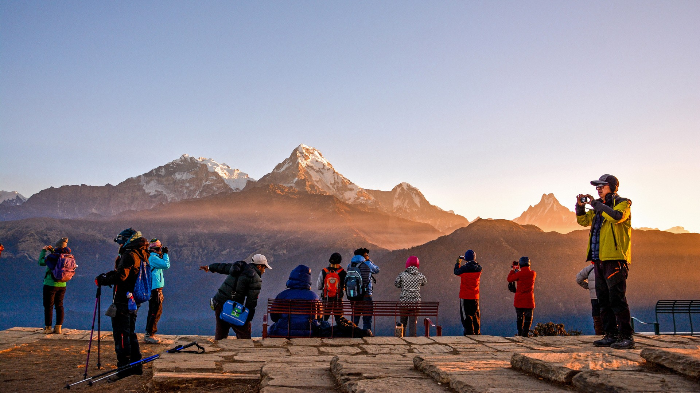
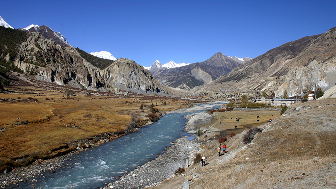
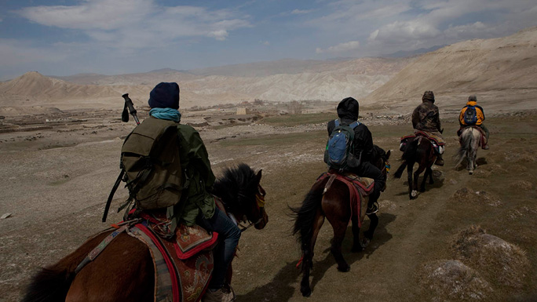
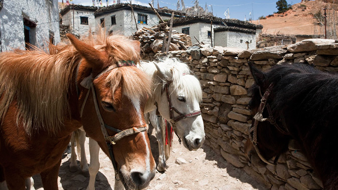
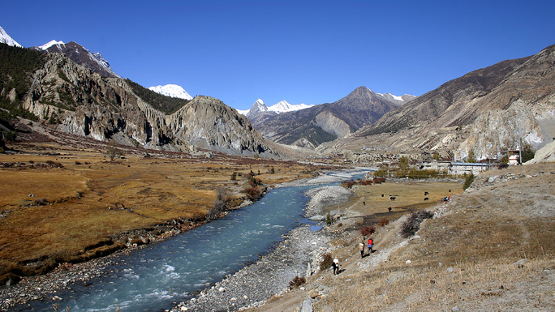
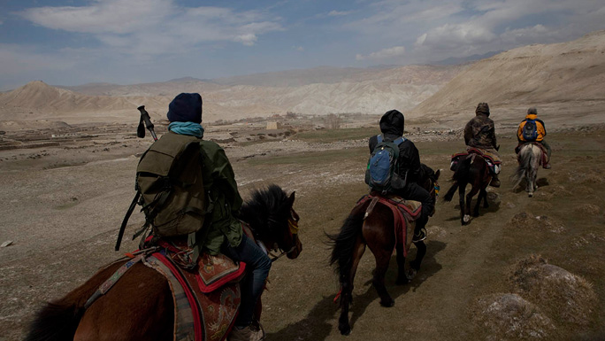
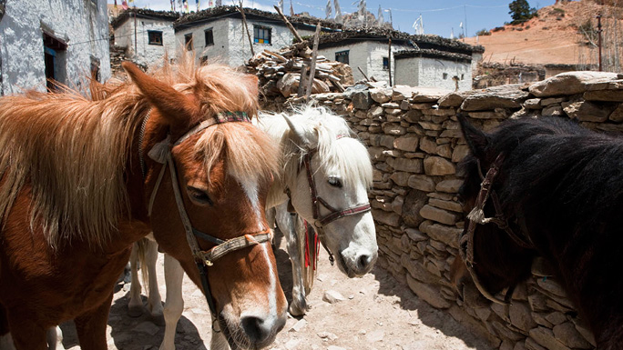

from 3-day treks to 3-week treks.
ANNAPURNA
Walk along some of the best trekking trails in the world;from 3-day treks to 3-week treks.
The legendary Annapurna region is the most diverse and popular trekking area in Nepal. From the full three-week Annapurna Circuit, which stretches into the historic Mustang region to short three-day treks, there's a trek suitable for everyone here.
 As the name suggests, the centre piece of this part of Nepal is the range of mountains that includes Annapurna I, the first of the 8,000 m peaks to be climbed. Also included in this region is another 8,000 m giant, Dhaulagiri, which is located west of Annapurna I.
 Between these two mountains lies the valley of the Kali-Gandaki River, the deepest gorge in the world. Views of lush, fertile farmland and undisturbed natural forest, snow covered mountains, and encounters with a mixture of many ethnic communities, all add up to a diverse range of experiences that make this area one of the most satisfying trekking destinations in Nepal.
 The fact that the Annapurna chain of mountains lies inland causes a large chunk of land to fall in the rain shadow area.Hence these parts are considerably drier than the southern slopes of the mountains. This leads to unusually diverse landscapes and the possibility of trekking during the monsoon.
 As the name suggests, the centre piece of this part of Nepal is the range of mountains that includes Annapurna I, the first of the 8,000 m peaks to be climbed. Also included in this region is another 8,000 m giant, Dhaulagiri, which is located west of Annapurna I.
 Between these two mountains lies the valley of the Kali-Gandaki River, the deepest gorge in the world. Views of lush, fertile farmland and undisturbed natural forest, snow covered mountains, and encounters with a mixture of many ethnic communities, all add up to a diverse range of experiences that make this area one of the most satisfying trekking destinations in Nepal.
 The fact that the Annapurna chain of mountains lies inland causes a large chunk of land to fall in the rain shadow area.Hence these parts are considerably drier than the southern slopes of the mountains. This leads to unusually diverse landscapes and the possibility of trekking during the monsoon.